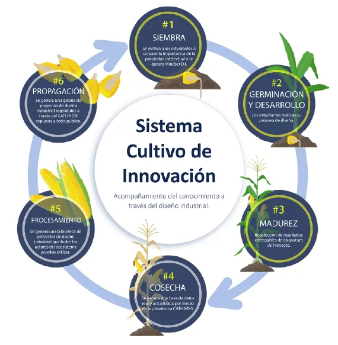
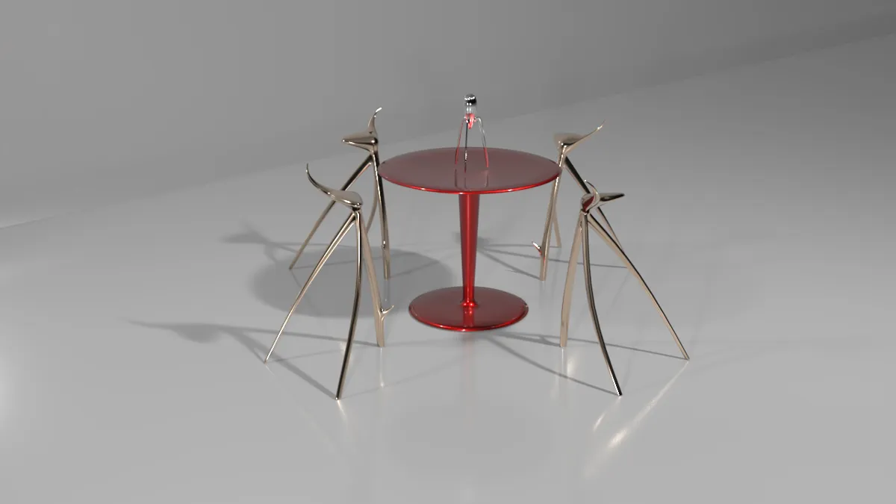
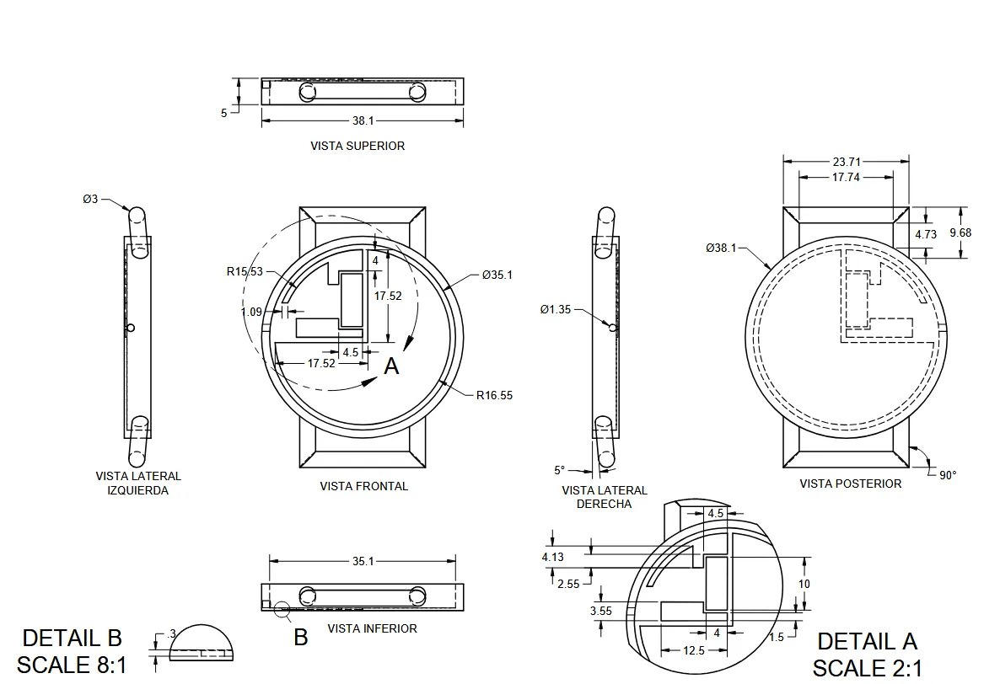
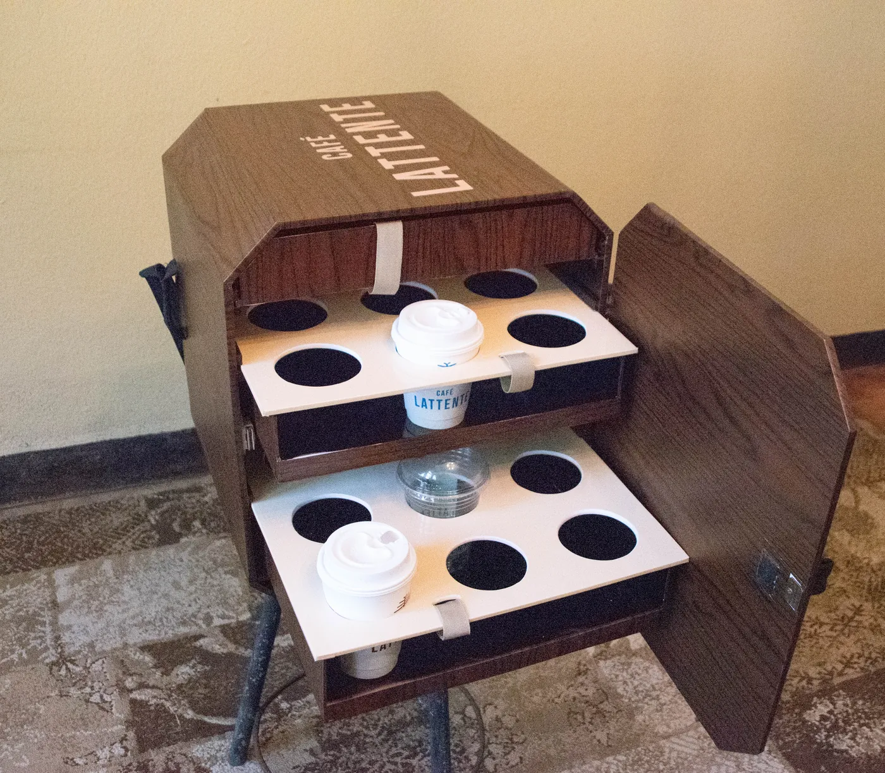
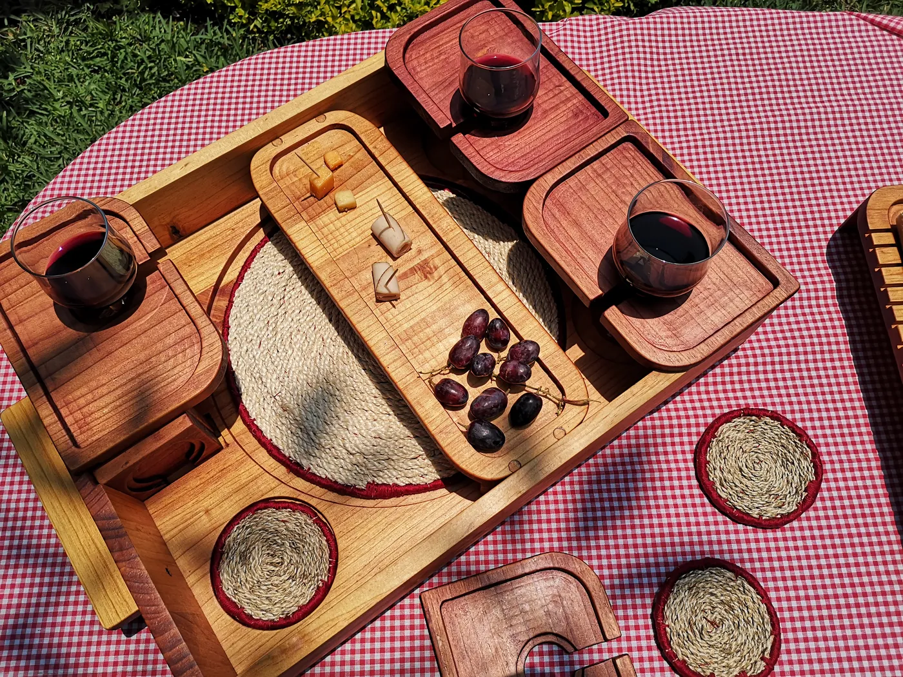
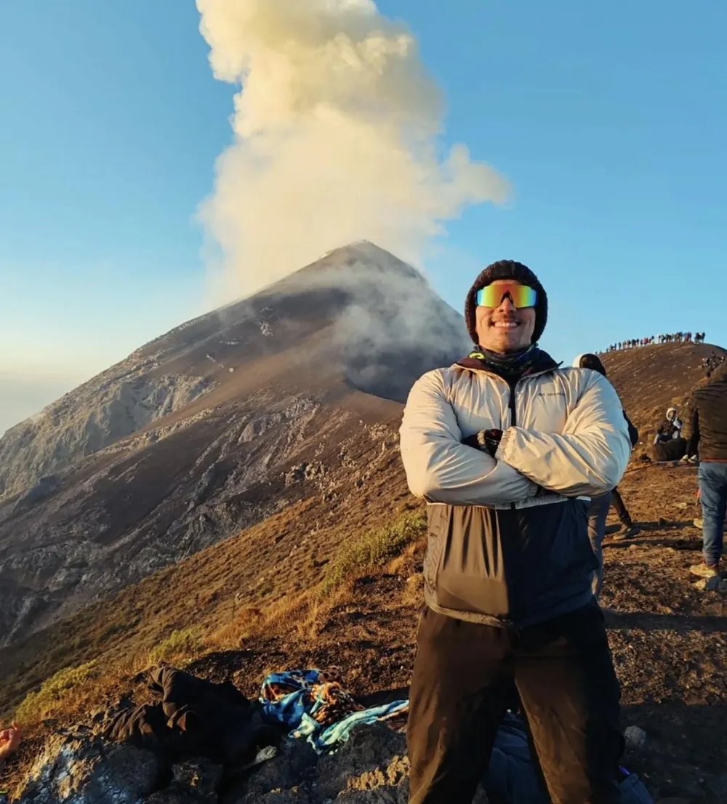
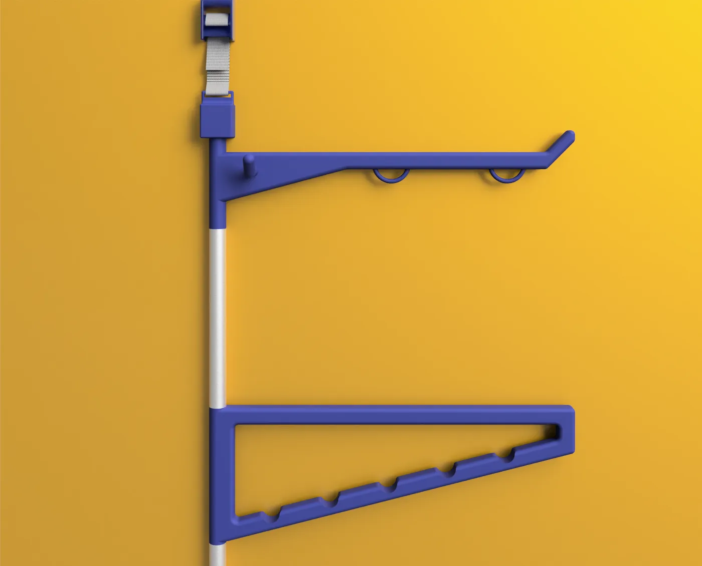

Developer · UX/UI
Hola, soy Daniel Borja
Diseñador industrial y técnico en desarrollo de software. Transformo ideas en soluciones digitales, del diseño a la implementación.
Developer · UX/UI
Diseñador industrial y técnico en desarrollo de software. Transformo ideas en soluciones digitales, del diseño a la implementación.
di.jdbo@gmail.com
Investigación UX/UIPrototipado en FigmaWireframing
Design SystemsAdobe Creative Suite3DS Max · Fusion 360
Design ThinkingArquitectura de información
HTML5CSS3JavaScript Node.jsExpressMongoDB MySQLGit
Full stack
Plataforma para calificar restaurantes, con API REST y autenticación.
Frontend · SPA
Gestión y préstamo de equipos, en JavaScript puro.
Full stack · API REST
API y app web para gestionar programas de TV, con roles y JWT.

Identidad digital creada desde cero, sitio web y estrategia de contenido para una firma de arquitectura e ingeniería.
Módulo comercial para Bi Banking: más de 15 workshops, flujos para cliente y back-office, validados con usuarios antes del handoff.

Plataforma que conecta Diseño Industrial URL-INDIS con CATI-RPI para registrar, gestionar y difundir proyectos estudiantiles.
Aplico Design Thinking en cada producto, de la investigación a la entrega del prototipo.
Un monograma que une la d y la B de Daniel Borja en un solo trazo. Las curvas de la B son hojas, porque el verde de las plantas es algo que me representa.

Modelado y renderizado de productos de diseño, desde objetos icónicos hasta propuestas propias.

Documentación técnica en CAD: vistas, detalles a escala y cotas listas para fabricación.


Productos diseñados y construidos: del concepto al objeto real.
Diseño industrial y desarrollo de software, más intercambios académicos en México y Colombia.

8
Subir volcanes es de lo que más disfruto fuera de pantalla.
18días de gym al mes
10kpasos, todos los días
Gym Cardio o caminata
Del diseño a la implementación.
Aquí son las · GMT−6
Sobre mí
Soy diseñador industrial y técnico en desarrollo de software, con experiencia en diseño digital y desarrollo frontend. Combino sensibilidad por la experiencia de usuario con conocimientos técnicos para crear interfaces funcionales, accesibles y visualmente consistentes.
Mi formación en diseño me ayuda a entender necesidades y resolver problemas; mi formación en desarrollo me permite llevar esas soluciones a una implementación real. Hoy fortalezco mi perfil frontend y avanzo hacia el desarrollo full stack.
Busco sumarme a un equipo donde pueda aportar desde la ejecución técnica y desde el diseño, para construir productos digitales escalables, mantenibles y centrados en el usuario.
Identidad personal
Mi logotipo es un monograma con mis iniciales. La d y la B comparten el mismo trazo vertical, así que se leen como una sola pieza: diseño y desarrollo en una misma línea, como dice el descriptor "designer, developer".
Las curvas de la B son dos hojas. El verde y las plantas son algo que me representa, y en este portafolio se convierten en un jardín: cada módulo es una maceta que crece al abrirla.
Formas geométricas, trazos gruesos y esquinas redondeadas. Esas mismas curvas definen el radio de las tarjetas de este sitio.
#537653#80AA77#E3EDDC#F3F4EE#1C1E1BBricolage Grotesque para títulos y Outfit para texto.
Caso de estudio · Diseño UX · Banco Industrial, 2024 – 2025
Diseño del módulo comercial de cartas de crédito para Bi Banking, la banca en línea de Banco Industrial. El reto: llevar un proceso operativo complejo de comercio exterior a un flujo digital claro, seguro y con firma electrónica.
Design ThinkingWorkshopsFigmaArquitectura de informaciónPruebas de usabilidad
Caso de estudio · Marca, web y contenido · 2022 – hoy
Firma guatemalteca de arquitectura e ingeniería. Como Social Media Manager y Content Strategist, lideré la creación y el lanzamiento de su identidad digital desde cero, junto con su sitio web.
BrandingDesarrollo webEstrategia de contenidoMétricas
Caso de estudio · UX + Research
Plataforma virtual que integra el Centro de Apoyo a la Tecnología y la Innovación (CATI-RPI) con el programa de Diseño Industrial de la Universidad Rafael Landívar (URL-INDIS), para optimizar el registro y la gestión de proyectos.
Diseño industrial
Modelo y renderizo productos de diseño: desde objetos icónicos, para entender su forma, materiales y construcción, hasta mis propias propuestas de producto. Herramientas: 3DS Max y Fusion 360.


Diseño industrial
Productos que diseñé y llevé a objeto real, pensados para el uso y el contexto de quien los usa.
Gabinete de madera con puerta y dos bandejas deslizables, cada una con espacio para seis bebidas, para transportar pedidos de forma segura.
Bandeja de madera con tabla central para servir, módulos portavasos desmontables y posavasos tejidos.
Diseño industrial
Documentación técnica en CAD para llevar un diseño a fabricación: vistas del objeto, detalles ampliados a escala y cotas.
Abre la imagen para verla en tamaño completo.
Proyecto · Full stack
Plataforma web para calificar restaurantes y dejar reseñas.
JavaScriptNode.jsExpressMongoDBCSS3
Proyecto · Frontend · SPA
Sistema para administrar, prestar y dar trazabilidad a equipos tecnológicos.
JavaScript ES6+HTML5CSS3LocalStorage
Proyecto · Full stack
API REST y app web para gestionar programas de televisión (novelas, anime y caricaturas), con un panel de administración.
httpOnly, roles de usuario y administrador, y límite de peticiones para frenar ataques al login.Node.jsExpressMongoDBJWTexpress-validatorJavaScript
Trayectoria
GRUBORJA · Social Media Manager & Content Strategist 2022 – presente
Lideré la creación y el lanzamiento de la identidad digital desde cero. Superviso el plan de contenidos y analizo métricas para decidir con datos.
Banco Industrial · UX Designer 2024 – 2025
Coordiné workshops de co-creación y diseñé flujos complejos para productos financieros. Validé viabilidad técnica y arquitectura de información con ingeniería, y realicé prototipos y pruebas de usabilidad.
UNO Digital · Copywriter 2023 – 2024
Redacción estratégica y conceptualización de campañas digitales para mercados internacionales, incluyendo clientes en Asia.
Estudio 7 · Project Manager (pasantía) 2020
Gestión operativa y coordinación de entregables en proyectos de diseño corporativo.
BetterWare México · Project Manager (pasantía) 2019
Supervisión de proyectos comerciales y colaboración entre departamentos.
Habilidades técnicas
HTML5CSS3JavaScriptC#
Node.jsExpressAPIs RESTMongoDBMySQL
GitGitHubGitFlowVS CodeJetBrains Rider
Ingeniería de promptsPrototipado asistido por IAGitHub Copilot
Diseño de producto & UX · Design Thinking
Uso Design Thinking como marco para todo el proceso: entiendo a las personas, defino el problema correcto y llego a un prototipo validado, listo para que ingeniería lo construya.
Empatizar Investigación
Entrevistas y workshops de co-creación con clientes, negocio y usuarios para entender sus necesidades reales.
Definir Diagnóstico
Mapeo de flujos operativos actuales y futuros (As-Is / To-Be) para identificar dónde está el problema.
Idear Arquitectura de información
Estructura de flujos y contenidos, revisando la viabilidad técnica junto a ingeniería desde el inicio.
Prototipar Baja y alta fidelidad
Wireframes y prototipos en Figma, con iteración rápida para reducir errores antes de construir.
Evaluar Validación y entrega
Pruebas de usabilidad con usuarios y traspaso técnico (handoff) a ingeniería.
Habilidades
Herramientas y métodos que uso para investigar, diseñar y gestionar productos digitales.
Investigación UX/UIWireframingPrototipado en FigmaScrumKanban
PhotoshopIllustratorAdobe XDDiseño responsivoDesign Systems3DS MaxFusion 360
Design ThinkingArquitectura de informaciónNotionTrelloJiraMicrosoft Office
Formación
Campuslands GT · Técnico en Desarrollo de Software 2025 – presente
Formación intensiva y presencial: 1,600 horas de programación, 300 horas de inglés técnico y 300 horas de habilidades adaptativas.
Universidad Galileo · Técnico en Diseño y Desarrollo Web 2025
Desarrollo frontend y backend, algoritmos, lógica de programación y bases de datos.
Universidad Rafael Landívar · Licenciatura en Diseño Industrial, Cum Laude 2017 – 2021
Especialización en metodologías de diseño de producto, análisis sistémico y resolución de problemas complejos.
Durante la licenciatura hice dos intercambios por medio de AUSJAL, la red de universidades jesuitas de América Latina a la que pertenece la Universidad Rafael Landívar.
2019
Universidad Iberoamericana
Ciudad de México, México
2020
Universidad Pontificia Bolivariana
Medellín, Colombia